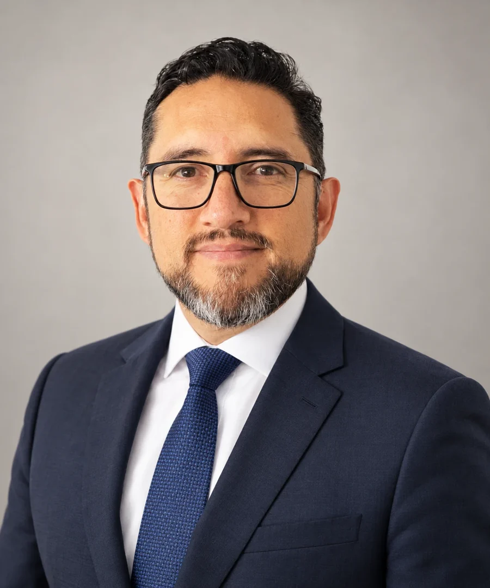

Leaders League
Consultoría forense · Colombia
Somos una firma colombiana con amplia experiencia en prevención, detección y contención de fraude, abuso de confianza y corrupción. Auditoría forense, laboratorio forense digital, analítica y gobernanza de datos, peritaje y formación, en un solo equipo.

Reconocimientos
Leaders League nos califica como firma Highly Recommended seis años seguidos. Una distinción se gana una vez; sostenerla año tras año exige la misma disciplina en cada encargo.
Ver todos los reconocimientos
Leaders League

Management Consulting Awards 2024 · 2025
+150
organizaciones que han confiado en SAG para prevenir, detectar e investigar el fraude.
+600
de manera exitosa, con la evidencia y el rigor que cada caso exige.
+10
fortaleciendo la gestión de nuestros clientes como socios estratégicos en la investigación y prevención de casos de fraude.
Tres líneas, un mismo expediente
Somos su aliado estratégico en la prevención y detección de fraude, las investigaciones, el análisis proactivo de datos y la defensa judicial mediante informes periciales.
Prevención, detección e investigación de fraude, corrupción y abuso de confianza, en el sector público y en el privado.
Revisamos todas las transacciones, no una muestra. Minería, visualización y automatización para encontrar lo que el muestreo no ve.
Peritaje contable y financiero forense para procesos judiciales, arbitrales y administrativos, con sustentación en audiencia.
¿Busca control interno, cumplimiento LA/FT, canales de denuncia o formación? Vea otros servicios →
Ventajas de la consultoría forense
Una investigación débil no se sostiene ante una autoridad. Trabajamos para que cada conclusión tenga evidencia detrás y pueda explicarse con claridad.

Identificamos, obtenemos y aseguramos los elementos materiales probatorios, para que el informe pueda presentarse ante una autoridad.
Revisamos todos los registros disponibles para separar lo habitual de lo inusual. Cada alerta se revisa antes de llamarla hallazgo.
Análisis de equipos, celulares, servidores e información en la nube, con imágenes forenses que preservan el original.
Revisamos el marco interno y usamos analítica de datos para anticipar riesgos de fraude, antes de que se materialicen.
Acompañamos el proceso ante las autoridades y sustentamos el dictamen cuando se requiere.
Auditoría forense, laboratorio digital, analítica de datos y peritaje se contratan por separado y, cuando el caso lo pide, trabajan juntos sobre la misma evidencia.
El equipo
Un equipo multidisciplinario, con formación en contaduría, derecho, economía e ingeniería de sistemas, liderado por un socio fundador con más de 30 años en investigación de fraude.

Socio fundadorLiderazgo
Socio fundador
Economista, especialista en Administración Financiera y control fiscal, con máster en dirección y administración de empresas. Auditor forense con más de 30 años de experiencia en investigación de fraude, recuperación de activos y gobierno de organizaciones públicas y privadas en Colombia y Latinoamérica.
Actúa como perito ante jueces y tribunales. Es profesor de auditoría forense en la Pontificia Universidad Javeriana y autor de libros sobre la materia.
Cómo trabajamos
Cuatro pasos que se apoyan entre sí. Cada uno deja constancia de lo que hizo y por qué.
Hablemos de su casoPartimos de lo que se sabe y de lo que se sospecha. Definimos el alcance y las preguntas que la investigación debe responder.
Obtenemos y protegemos los elementos materiales probatorios, incluidas las imágenes forenses de equipos, celulares y servidores.
Trabajamos sobre todos los datos disponibles. Ubicamos dónde se materializó el riesgo, durante cuánto tiempo y con qué pérdida.
Entregamos un informe estructurado, con posible alcance pericial, y acompañamos el proceso hasta la sustentación en audiencia.
Rigor técnico, trazabilidad y un criterio que se sostiene ante cualquier autoridad.
Conocimiento
Artículos sobre fraude, auditoría forense, analítica, peritaje y cumplimiento, escritos por el equipo de SAG.
Más publicaciones en
Consulta confidencial
Basta una descripción general. Si el caso avanza, le pediremos nombres y documentos por un canal seguro.